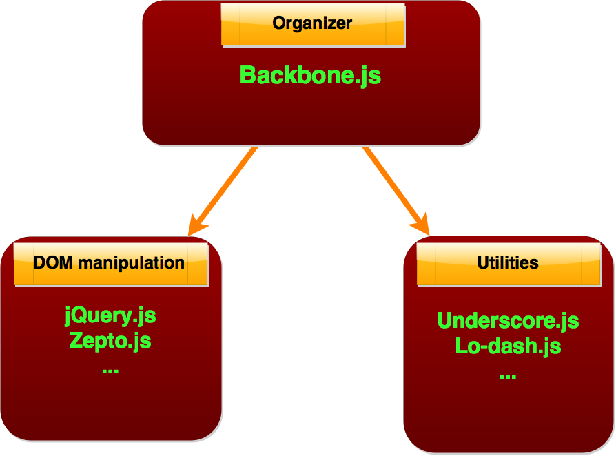

Šta je Backbone web aplikacija
"Backbone aplikacija" je web aplikacija struktuirana na način koji je predstavljen u backbone.js bibilioteci. To je MV* arhitektura.
Aplikaciju čine tri dela: Manipulacija DOM-a, Pomoćne funkcije (operacije sa objektima, operacije nad nizovima, ...) i Backbone.js bibilioteka koja određuje strukturu cele aplikacije.
jQuery (ili neka druga srodna bibilioteka) služe da manipulišu DOM-om, jQuery je preporučen od strane Backbone-a, i cela komunikacija sa HTML dokumentom se odvija preko jQuery-a.
Najčešće korištene "utility" biblioteke, Underscore.js i Lodash.js nude funkcionalnosti koje Backbone koristi interno, ali koje su potrebne i korisnicima za lakši razvoj aplikacije.

Underscore.js je "hard-dependency" za Backbone.js pa mora biti učitan pre backbone.js fajla. Takođe, ukoliko naša aplikacija koristi jQuery ili neku srodnu bibilioteku (a najverovatnije hoće), i ta biblioteka mora biti učitana pre Backbone-a.
Glavne beneficije koje Backbone nudi su visok stepen fleksibilnosti u načinu razvoja aplikacije, precizna organizacija koda (što nam omogućava efikasnije dodavanje novih funkcionalnosti i izmene postojećih) i kontrola svih delova aplikacije (nema mnogo "magije").
Pored svega ovoga, Backbone je samo Javascript bibilioteka, a ne fremvork jer se korisnik ne forsira da koristi ponuđene funkcionalnosti striktno "po receptu".
 Ovi delovi su objekti sa predefinisanim atributima (od kojih su neki definisani prazni), koje kada predefinisemo menjamo njihovo "default" ponašanje (proširujemo funkcionalnosti).
Ovi delovi su objekti sa predefinisanim atributima (od kojih su neki definisani prazni), koje kada predefinisemo menjamo njihovo "default" ponašanje (proširujemo funkcionalnosti).